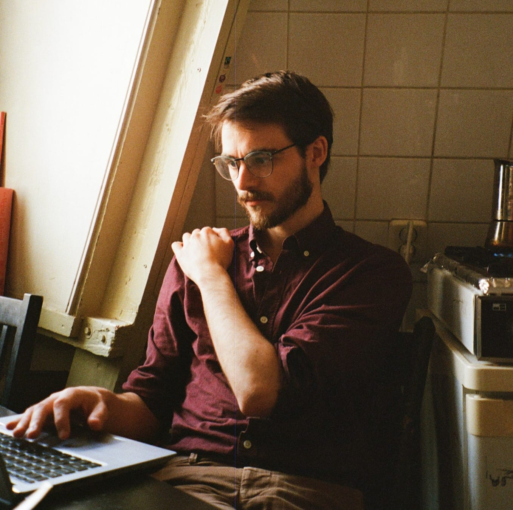

Michiel J. Ris
Papieren publicaties
- Eroten
- Broersgedicht, Uitgeverij HetMoet
- "Vijf sonnetten aan Dionysus" in Vreselijk verlangen
- "Prometheus en Penelope aan het werk" in MUGzine #15
- "(On)verantwoord metrum"
Digitale publicaties
- "Zelfs wie schrijft blijft niet altijd: Interview Michiel J. Ris"
- "Nocturne III"
- "Vijf sonnetten aan Dionysus"
Voordrachten
- Woordenvloed, De Letterie
- Queer Bodies, VOX-Pop
- Leidse Poëzienacht
- Perdu Dichtersmarathon
- Stukafest Leiden
- Podium Sleutelwoord
- ILFU's 1000 Dichters
- Salon de l'Absinthe
- Het Grote Culturele Bevrijdingsdiner op NDSM
- "Digitaal open podium Sophia Aeterna"